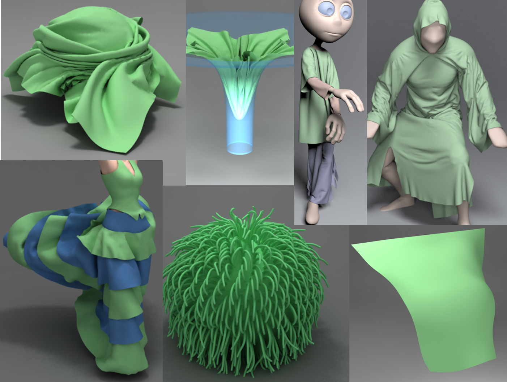

1 - Zhejiang University, China
2 - University of North Carolina at Chapel Hill, USA
*Tongtong Wang and Zhihua Liu are joint first authors. Min Tang is the corresponding author.

Benchmarks: We use seven challenging benchmarks arising from deformable and cloth simulations. We compare the performance of our DCD and CCD algorithms with prior methods.
Abstract
We present an efficient and accurate algorithm for self-collision detection in deformable models. Our approach can perform discrete and continuous collision queries on triangulated meshes. We present a simple and linear time algorithm to perform the normal cone test using the unprojected 3D vertices, which reduces to a sequence point-plane classification tests. Moreover, we present a hierarchical traversal scheme that can significantly reduce the number of normal cone tests and the memory overhead using front-based normal cone culling. The overall algorithm can reliably
detect all (self) collisions in models composed of hundred of thousands of triangles. We observe considerable performance improvement over prior CCD algorithms.
Paper (PDF 2.48 MB)
Tongtong Wang, Zhihua Liu, Min Tang, Roufeng Tong, and Dinesh Manocha, Efficient and Reliable Self-Collision Culling using Unprojected Normal Cones, Computer Graphics Forum, 36(8), 487-498, 2017.
@article{scc17,
author = {Wang, Tongtong and Liu, Zhihua and Tang, Min and Tong, Ruofeng and Manocha, Dinesh},
title = {Efficient and Reliable Self-Collision Culling using Unprojected Normal Cones},
journal = {Computer Graphics Forum},
volume = {36},
number = {8},
pages = {487--498},
year = {2017},
}
Video (19 MB)
This research is supported in part by NSFC (61572423, 61572424), Zhejiang Provincial NSFC (LZ16F020003), and the Doctoral Fund of Ministry of Education of China (20130101110133). Dinesh Manocha is supported in part by ARO contract W911NF-14-1-0437, and the National Thousand Talents Program of China.
CB #3175, Department of Computer Science
University of North Carolina
Chapel Hill, NC 27599-3175
919.962.1749
geom@cs.unc.edu